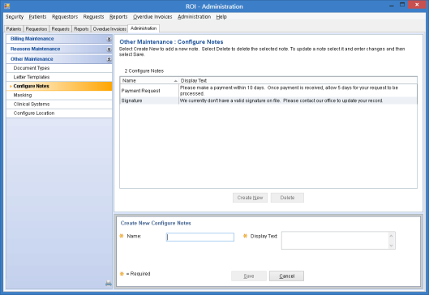

The Configure Notes form allows you to add, modify, or delete standard notes that ROI users can add to letters and invoices associated with ROI requests. Multiple notes can be added to each letter or invoice for which this feature has been enabled. Users can also add free-form notes.
To open the form
Select the Administration tab > Other Maintenance > Configure Notes.

Item descriptions
Main Content Pane
Configure Notes grid
Displays the note names and associated text currently defined in the system. The grid title is preceded by the number of existing notes.
The Configure Notes grid contains the following columns:
Create New
Allows you to enter the information needed to add a new note.
Delete
Deletes the selected note. You can delete notes at any time.
Detail Pane
Name
Specifies the name for a note.
Note names must be unique. They are not case sensitive. You can change them at any time.
Display Text
Specifies the text to display when notes are added to letters such as cover letters and invoices.
To ensure that users do not get unexpected results, use only the following characters:
You can change display text at any time.
Save
Saves the new or modified note.
Cancel
Cancels the note you were adding or any unsaved changes you made to an existing note.